The data platform you run yourself.
DataBridge puts connectors, Spark notebooks, SQL, Delta Lake tables, scheduled jobs and pipelines, and AI-built dashboards into one app. Install it on a Windows PC, your own server or a free cloud VM. Your data stays where you put it.
Familiar if you’ve used Databricks: notebooks with %sql and dbutils, Delta tables, multi-task jobs and Git folders.
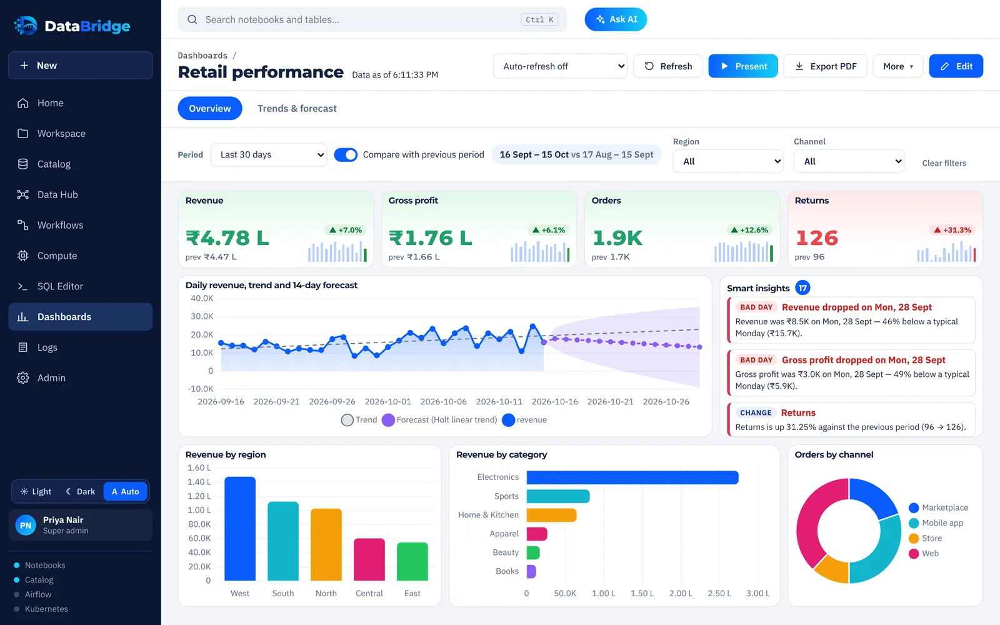
Everything between your source systems and the decision
Seven parts that share one catalog, one sign-in and one set of roles. Follow a table from the system it lives in to the slide your manager sees.
- 1Connect582 connectors, 10 native sources, file upload
- 2SyncScheduled, real-time or event-driven; many tenants
- 3StoreDelta Lake catalog with history and time travel
- 4BuildNotebooks, Spark SQL, Git folders, AI help
- 5OrchestrateJobs, 12-activity pipelines, Airflow, Kubernetes
- 6AnalyseAI dashboard builder, 26 themes, presentations
- 7OperateRoles, sign-up approval, audit log, feature switches
Connect
582 connectors in the catalog, and nothing else to install
Connectors run inside DataBridge. There is no separate ETL server to host or pay for: pick a source, fill in the form, test it, and choose the tables you want.
| Kind | How many | What you get |
|---|---|---|
| Native sources | 10 | PostgreSQL, MySQL, MariaDB, SQL Server, Oracle, SFTP, folders and network shares, file from a URL, Google Sheets, and any REST API — with page, offset, next-URL and cursor pagination, and nested JSON kept as structs. |
| Built-in connectors | 4 | Toast, Clover, Restaurant365 and Revel (beta), written and maintained by us: multi-location, full history backfill and incremental sync to the second. |
| Connector library | 578 | Community connectors across 20 categories — CRM and sales, payments, marketing and ads, e-commerce, finance, HR, support, product analytics, databases and warehouses and more. 522 work with no install; 59 are certified. |
| File import | 6 | File formats: CSV, TSV/TXT, Excel (every sheet), JSON, JSON Lines and Parquet, up to 200 MB a file. Types and headers are detected; you rename, retype or skip columns before loading. |
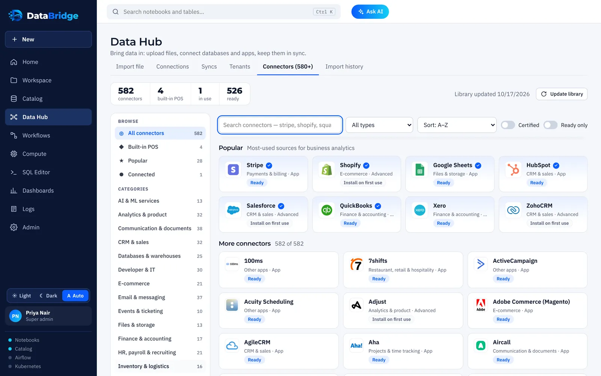
Library connectors are open-source community definitions, most under the Elastic License 2.0: free to run on your own servers, but they may not be resold as a hosted service. That is why our hosted plan includes the native, built-in and MIT-licensed connectors, and the full library comes with self-hosted installs.
Sync
Keep every table current — on a schedule, every 15 seconds, or when something happens
A sync copies the tables you choose into your catalog and remembers where it stopped, so the next run only fetches what changed.
When it runs
- On demand, or every few minutes
- Daily at a time you set
- Real time: every 15 seconds or more
- When new files land in a folder or on SFTP
- When a webhook URL is called
- Right after another sync finishes
How it writes
- Full refresh, append, or upsert on key columns
- Incremental on any “changed at” column
- Long histories load in checkpoints and survive a restart
- “Latest data” shows how far each table has got
- Re-sync history in one click
- Delta Lake or Parquet output
Shape it on the way in
- Rename, drop and retype columns
- Calculated columns with Spark expressions
- Row filters
- Flatten nested objects, explode arrays
- Remove duplicates by key, keeping the newest row
- Preview the result before you save
One setup, many customers
Assign each connection to a tenant (a customer) and its businesses (brands, branches, stores). Every row is stamped with tenant and business, upsert keys include them, and a full refresh replaces only that tenant’s rows — so many customers can share one table safely. Prefer separation? Put {tenant} in the schema name and each customer gets their own.
| tenant | business | invoice_id | amount | updated_at |
|---|---|---|---|---|
| greenleaf | andheri | A-10293 | 4,820.00 | 2026-10-15 09:41:07 |
| greenleaf | bandra | B-55120 | 1,265.50 | 2026-10-15 09:41:12 |
| kite | koramangala | K-00871 | 3,999.00 | 2026-10-15 09:40:58 |
| harbor | online | W-77302 | 649.00 | 2026-10-15 09:41:15 |
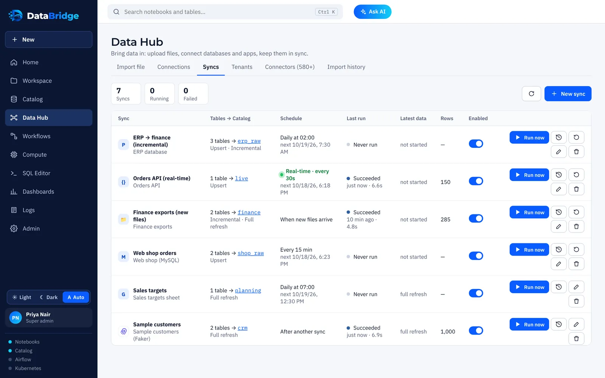
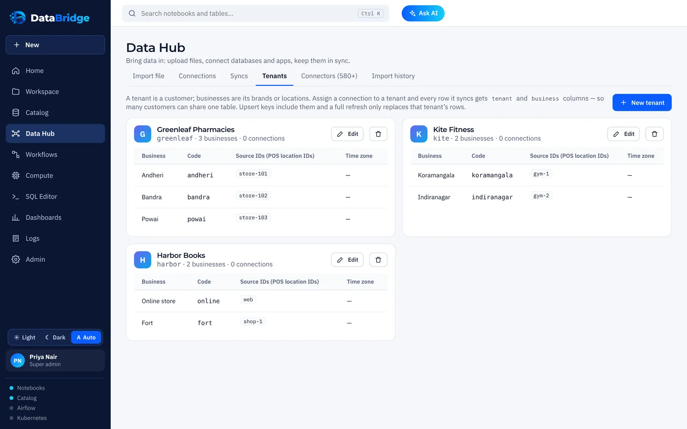
Store
A catalog of Delta tables you can browse, profile and roll back
Tables are stored as Delta Lake on Apache Spark and registered in a Hive metastore. Look before you trust: sample rows, a data profile, and the full change history are a click away.
Browse
Schemas and tables, column types with nested structs shown as trees, sample data, table details and the DDL to recreate it.
Profile
Outliers, skew, missing cells, duplicate rows and the role of every column — measure, dimension, date or ID — from a sample in seconds.
History and time travel
Every write, merge and delete is listed. Look at the table as it was, compare two versions, or restore one.
Maintenance
OPTIMIZE and Z-ORDER, VACUUM with a dry run first, RESTORE, liquid clustering and table properties — no SQL needed.
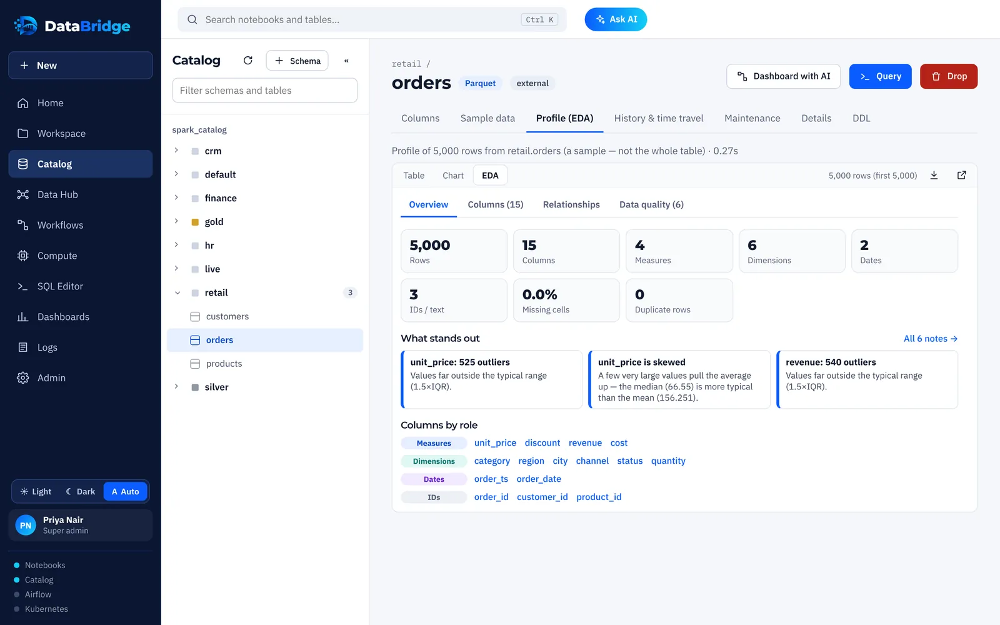
Build
Notebooks and SQL with everything a data team expects
Each notebook gets its own Jupyter kernel with PySpark ready to go. Cells keep running on the server when you switch pages, and the results are saved even if nobody is watching.
Notebooks
%sql,%md,%sh,%fsand%runcellsdisplay()with table, chart and profile viewsdbutils.widgets,dbutils.notebook.runandrunMultiple,dbutils.fs- Live error checking, Black and SQL formatting, autocomplete, docs on hover
- Revision history, variables panel, find and replace across cells
SQL editor
- Spark SQL with a schema browser and query history
- Run all or just the selected text; cancel long queries
- Download results as CSV
- Describe what you need and let Dora write the query
Git folders
Clone from GitHub, GitLab, Azure DevOps, Bitbucket or any HTTPS remote. Switch and create branches, pull, review diffs, commit and push. Notebook outputs are stripped on commit, and tokens are never written into the repository’s config.
Dora, the AI assistant
Fix a failed cell, write SQL from a sentence, or ask questions in a chat panel on every page (Ctrl+J). Dora works with Ollama on your own machine — nothing leaves it — or any OpenAI-compatible service such as Groq, Google Gemini or OpenRouter.
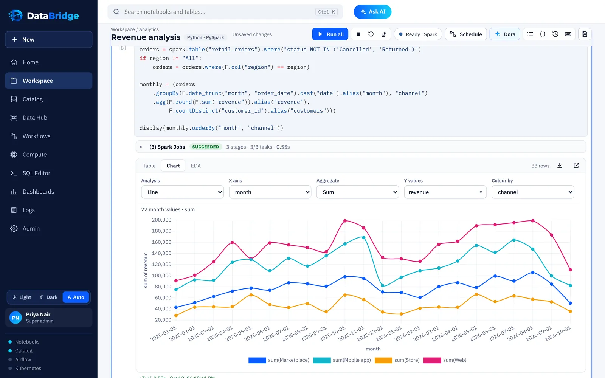
display() turns any DataFrame into a table, chart or profile.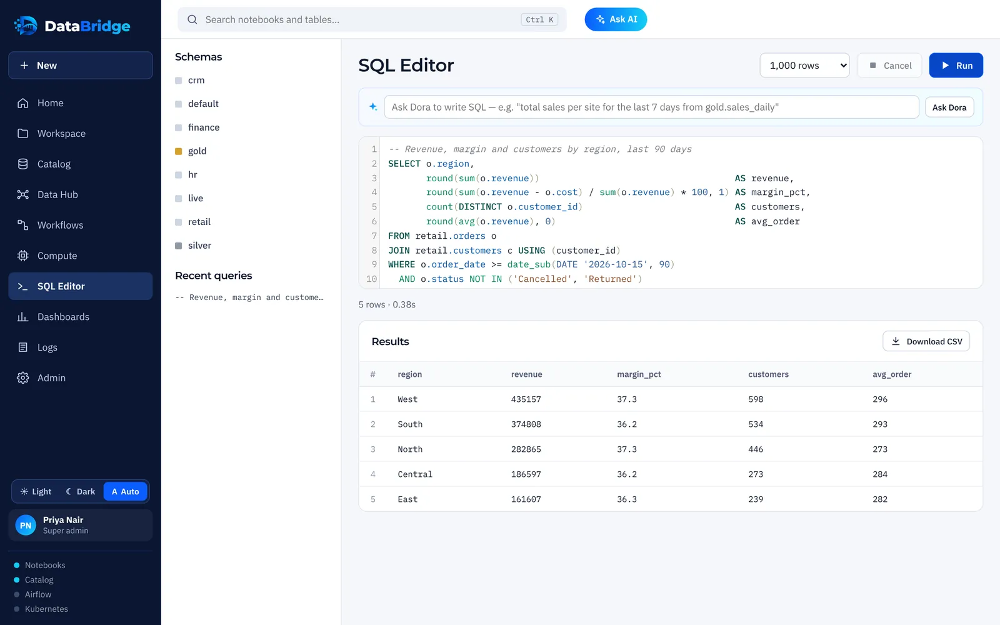
Orchestrate
Schedule the work with jobs, visual pipelines or Airflow
Use whichever fits the team: notebook jobs for engineers, a drag-and-drop pipeline designer for everyone else, and Airflow if you already run it.
Jobs
Multi-task jobs where every task is a notebook. Dependencies, retries with a delay, timeouts, parameters, cron schedules in your time zone and per-job Spark settings. A run grid shows every task of the last ten runs, and Repair re-runs only what failed.
Pipelines
A visual designer with 12 activities: Copy data, Notebook, SQL script, Web, Lookup, Set variable, Append variable, Execute pipeline, Wait, Fail, If condition and ForEach. Branch on success, failure or completion; use dynamic expressions with 50+ functions; trigger on a schedule or a tumbling window with backfill; debug, monitor and re-run.
Airflow
Connect Airflow 2 or 3. Write DAG files in DataBridge and deploy them without kubectl, trigger and pause DAGs, clear failed tasks, read task logs, or open the full Airflow UI inside DataBridge.
Compute and logs
Send big Spark applications to Kubernetes through the Spark Operator. One logs centre follows the server, every notebook kernel, and every job and pipeline run, live.
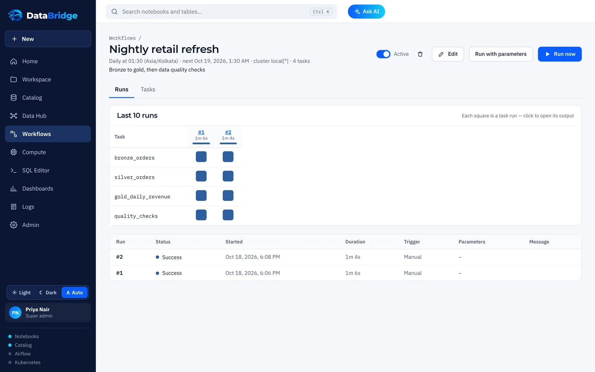
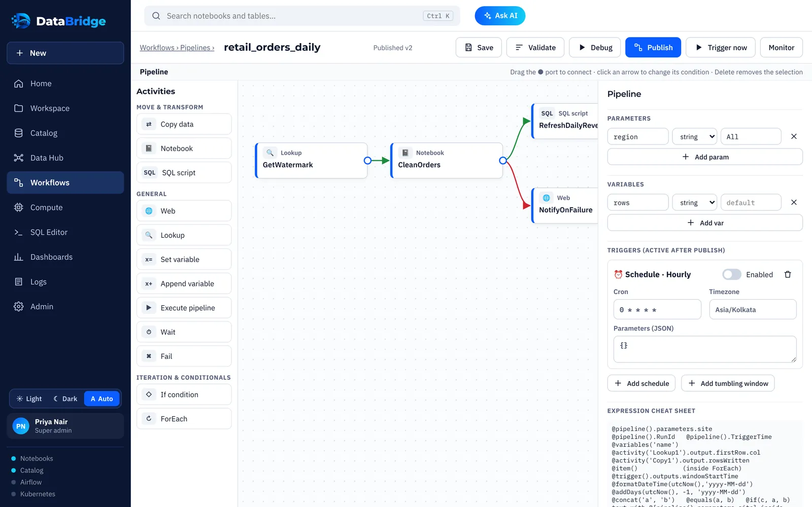
Analyse
Dashboards built by AI and checked against the source before you see them
Describe what the dashboard should help you decide and pick the data. DataBridge profiles the tables, draws the data model, finds the joins and runs reconciliation checks, then proposes KPIs, charts, filters and pages for you to review.
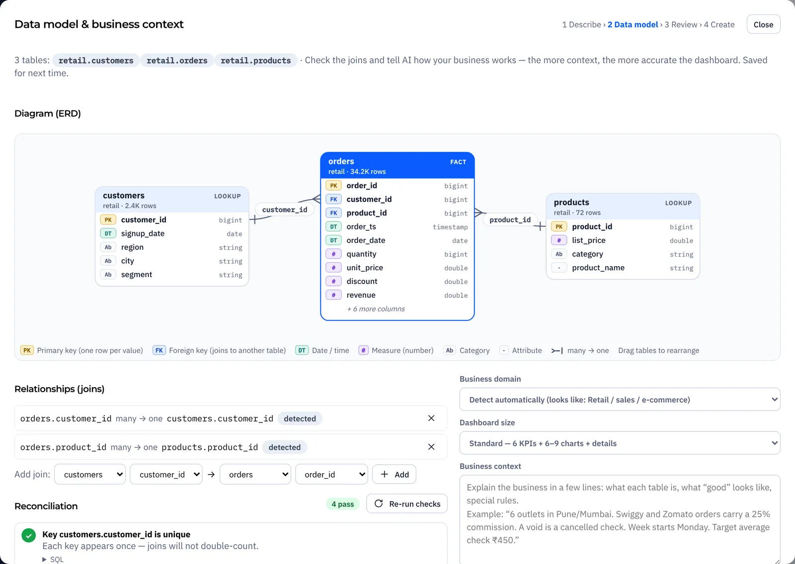
The AI dashboard builder
- Detects the business domain — retail and sales, finance, HR, marketing, support, inventory, logistics, engineering or restaurants
- Checks that keys are unique, no rows are orphaned and totals match the source tables
- You untick anything you don’t want before it’s created
- No AI key? A built-in designer builds it instead
What a dashboard can do
- 11 widget types: KPI, bar, horizontal bar, line, area, pie, funnel, table with heat map and totals, multi-chart panel, smart insights and text
- 7 KPI card styles, filters, pages and auto-refresh
- Period presets with “compare with previous period”
- Trend lines, forecasts and anomaly flags on time charts
- Export to PDF; download any chart as CSV or PNG
Fast by default
Dashboard queries run on DuckDB straight from the Delta files — usually in milliseconds — and fall back to Spark when a query needs it. SQL datasets accept {{parameters}} that are inserted as safe literals.
Present with AI
Turn a dashboard page into slides with a written story and narration, read aloud in natural voices (free Microsoft Edge voices, OpenAI or ElevenLabs). Auto-play it in a meeting or save it as a PDF.
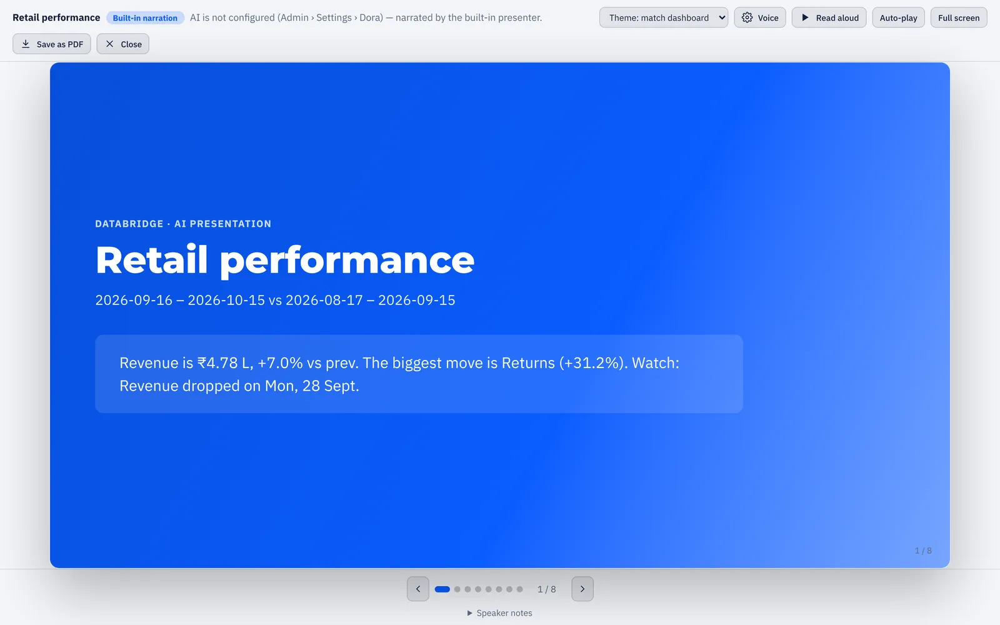
Operate
Run it for a whole team: roles, approvals and an audit trail
Sign-in is on from the start. Admins decide who gets in, what each role can see, and can trace every change afterwards.
People
Four roles — super admin, admin, editor and viewer. Self sign-up waits for an admin’s approval, with a spam trap and rate limit built in. Personal API tokens for scripts.
Control
Turn 16 features on or off for everyone, per role or per user. A switched-off feature disappears from the menus and is blocked in the API too.
Visibility
An audit log of every change, exportable to CSV. System health checks, a kernel manager that stops idle kernels, and settings you edit in the browser with validation.
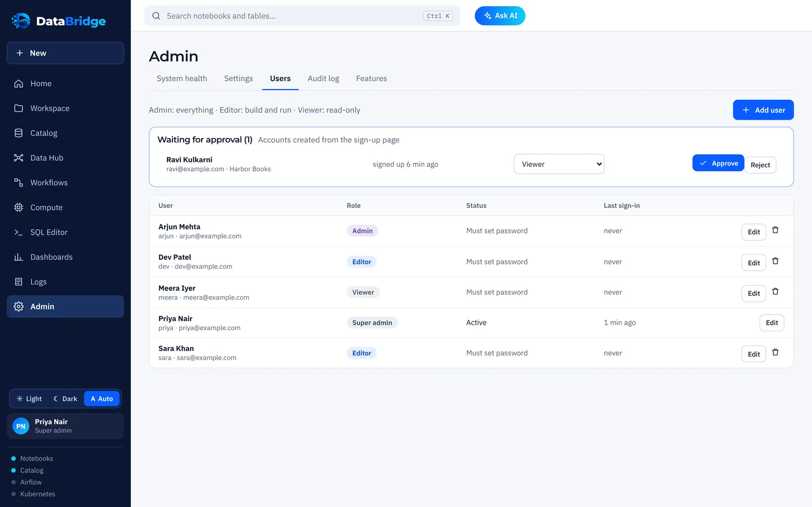
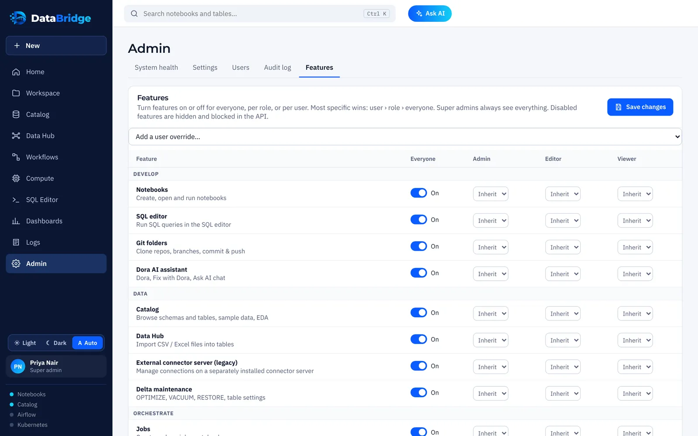
Five designs, light or dark — change it with one setting
Choose the design everyone sees in Admin › Settings › Look & feel. Light, dark or auto stays each person’s own choice. Fonts ship with the app, so it looks the same offline.
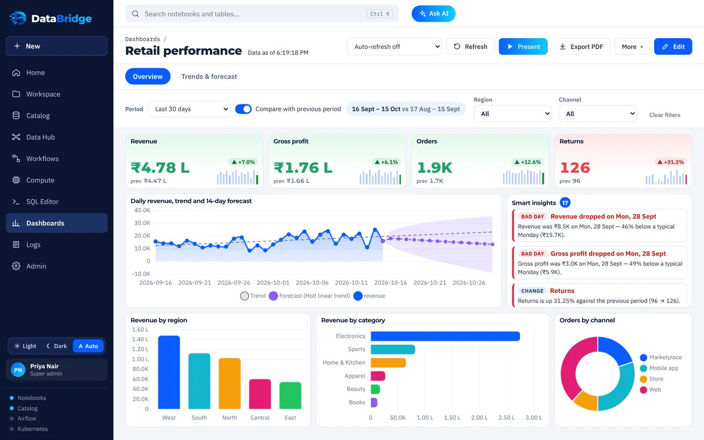
And 26 themes for dashboards
Four families — classic, glass and soft UI, dark and bold, light and creative — plus a colour customiser for corners, glass and fonts. Presentations follow the dashboard’s theme.
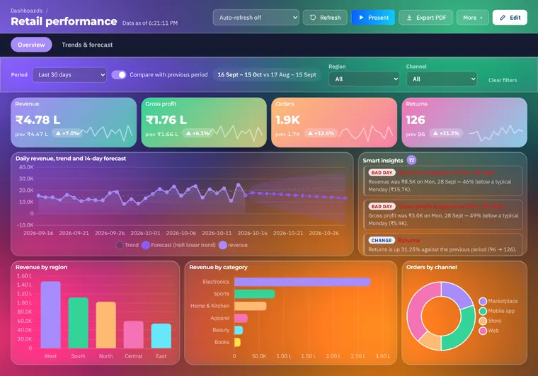
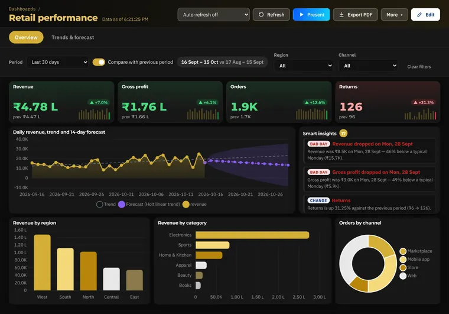
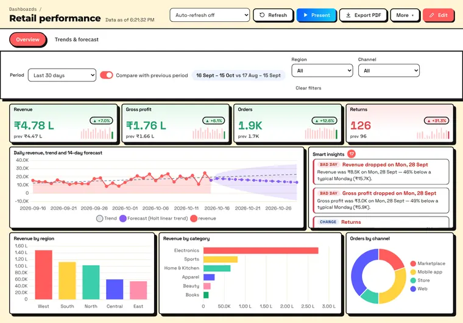
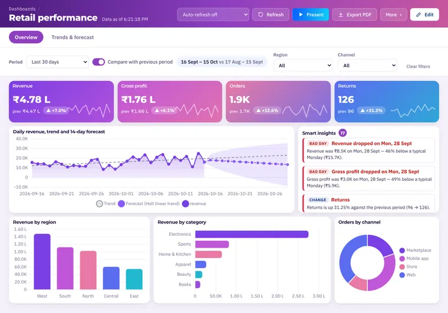
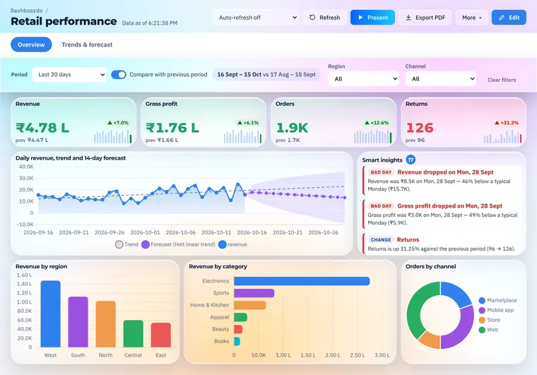
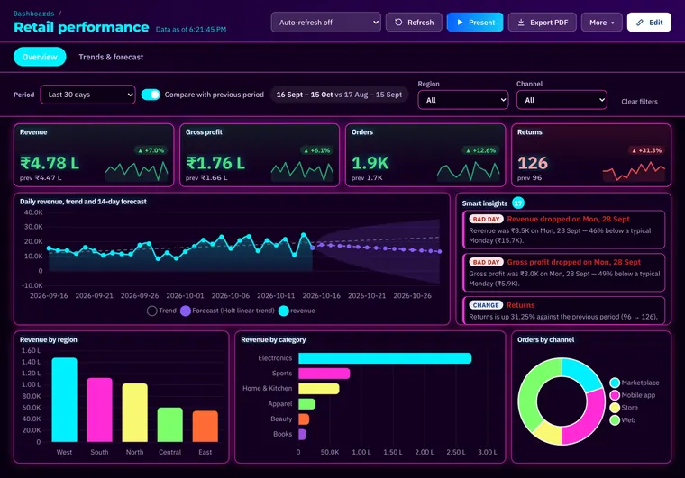
How it’s built: open engines, open formats
DataBridge is a Python server and a web app around engines the data world already trusts. Nothing proprietary sits between you and your data.
In your browser
DataBridge server
Engines
Your storage
If you ever leave, your work leaves with you: tables are Delta Lake, notebooks are Jupyter, code lives in Git, and connectors follow the open Airbyte protocol — without needing an Airbyte server.
What makes DataBridge different
It runs where you want
A laptop for a pilot, a server for production, a free Oracle Cloud VM in between. Nothing ties you to one cloud, and your data never has to leave your network.
One app instead of five
Ingestion, storage, notebooks, scheduling and dashboards share one catalog, one sign-in and one set of roles. No glue between separate tools, no second bill for each.
Costs you can predict
No meter per query, per row or per connector. You pay for the licence and the machine it runs on — a single PC is enough to start.
Built for serving many customers
Tenants and businesses are part of the sync engine, so agencies, franchises and SaaS teams can keep each customer’s rows apart in shared tables, or give each their own schema.
AI that checks its work, and stays optional
The dashboard builder reconciles totals against the source before showing a number. Everything still works without an AI key, and the assistant can run entirely on your own machine.
Your brand, your language
Pick one of five designs, set your own brand name on connector help texts, logs and errors, and write the business context the AI should use.
Install it in minutes, wherever you like
Runs on Windows and on Linux (x86 or ARM), directly or in Docker. Spark needs Java 17; System health tells you if anything is missing.
A Windows PC
Starts DataBridge on port 8800 with Spark ready. One command updates it later.
# start .\run.bat # update .\update.ps1
Docker
DataBridge and its Hive metastore on PostgreSQL in containers, with an optional Cloudflare tunnel. Builds for ARM and x86.
docker compose up -d
Oracle Cloud, free
One script sets up DataBridge on an Always Free ARM virtual machine, so it stays on when your PC is off.
./setup.sh
Your own domain
A Cloudflare Tunnel publishes app.yourdomain.com over HTTPS without opening ports, and can run as a Windows service.
.\named-tunnel.ps1 -Service
Start with a free pilot
Try the whole product on your own data for 30 days. Then choose how you want to run it.
Pilot
Free for 30 days
- Every feature, on our cloud or your machine
- Your data or the sample data
- A setup call to connect your first sources
Self-hosted
Annual licence
- Runs on your PC, servers or cloud account
- The full connector library
- Updates and email support
- Brand name and design of your choice
Hosted by us
Monthly
- We run and update DataBridge for you
- Native, built-in and MIT-licensed connectors
- Tenants for serving your own customers
- Email support
Questions
Is DataBridge a copy of Databricks?
No. It’s an independent product that works in a familiar way — notebooks with %sql and dbutils, Delta tables, multi-task jobs and Git folders — so people who know that workflow are productive on day one. It adds things of its own, like built-in connectors, tenants, the AI dashboard builder and presentations. DataBridge is not affiliated with Databricks.
Do I need a Spark cluster?
No. Spark runs in local mode on the same machine as DataBridge. When a job outgrows it, send it to Kubernetes through the Spark Operator.
Where is my data stored?
In Delta Lake or Parquet folders on the machine or storage you choose, with table definitions in your own Hive metastore. If you self-host, nothing is copied to us.
Does the AI send my data anywhere?
Only to the AI service you configure. The dashboard builder sends table profiles and small samples so it can design the dashboard. With Ollama the model runs on your own machine and nothing leaves it. AI is optional: the built-in designer and narrator work without it.
Can I use all 582 connectors?
On your own servers, yes. Most library connectors are under the Elastic License 2.0, which allows that but not reselling them as a hosted service, so our hosted plan includes the native, built-in and MIT-licensed connectors. Licence notices are kept with each connector.
Can one installation serve many customers?
Yes. Create a tenant for each customer and a business for each of their brands or branches. Rows are stamped with both, so customers can share tables safely, or each can get their own schema.
What do I need to run it?
Windows or Linux (x86 or ARM), Python and Java 17 — or just Docker. A single PC is enough for a pilot; move to a server or a cloud VM when you’re ready.
Can it carry our brand?
You can choose the design and set the brand name shown on connector screens, help texts, logs and errors. For a fully white-labelled build, talk to us.
See your own data in DataBridge this week
Start a pilot, connect a database or a spreadsheet, and build your first dashboard. We’ll help with the setup.